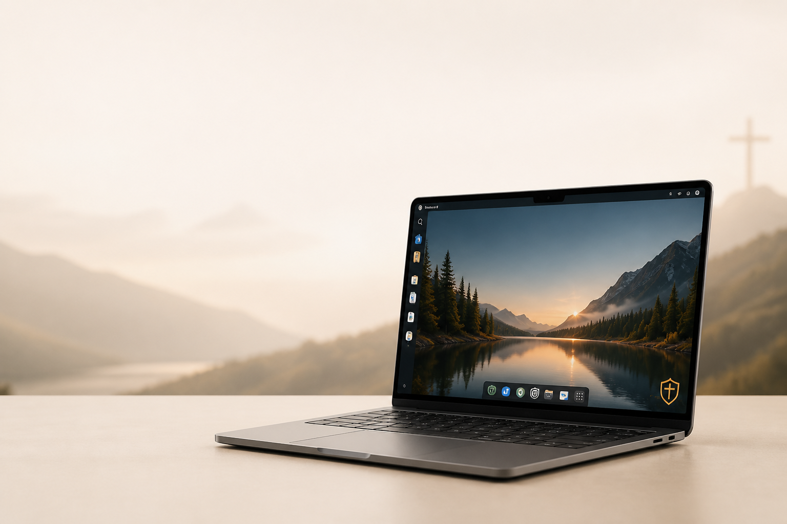

The flagship product
Steward Linux
A future Fedora Atomic/Kinoite-derived desktop built to be private, understandable, beautiful, and grounded in values that serve people.

A real desktop, carefully built
Calm on the surface. Serious underneath.
The goal is a complete installed operating system—not merely an ISO or browser prototype. It must boot, install, persist, and provide a usable graphical desktop before we call it ready.
Status: Developer Preview foundation in active development. No download or purchase is available.